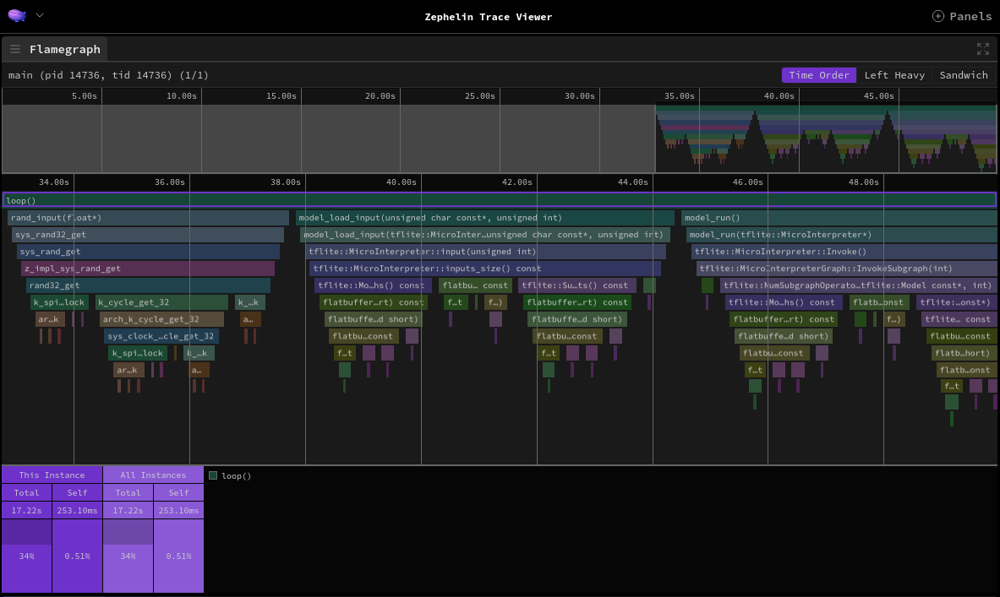

Adding support for new AI inference libraries¶
This chapter describes a few ways to trace a new AI runtime:
Using dedicated runtime events - requires additional steps, but provides the most complex information and visualization,
Using instrumentation subsystem - can be used as is, but does not provide all the necessary information, therefore making some visualization unavailable.
Implementing support¶
A runtime support provides versatile information about a model’s execution and its architecture, helping to analyze and optimize an application. This section describes how to implement the support based on a TFLM profiling example.
Create new events for the runtime¶
First and foremost, a new runtime-specific events have to be defined.
As the CTF (Common Trace Format) format requires an additional metadata file with the event structures, all definitions are placed in zpl/metadata.
In this file, zpl_tflm_enter and zpl_tflm_exit are defined:
event {
name = zpl_tflm_enter;
id = 0xA0;
fields := struct {
uint32_t thread_id;
uint16_t subgraph_idx;
uint16_t op_idx;
uint16_t tag_len;
ctf_bounded_string_t tag[tag_len];
uint32_t arena_used_bytes;
uint32_t arena_tail_usage;
};
};
event {
name = zpl_tflm_exit;
id = 0xA1;
fields := struct {
uint32_t thread_id;
uint16_t subgraph_idx;
uint16_t op_idx;
uint16_t tag_len;
ctf_bounded_string_t tag[tag_len];
uint32_t arena_used_bytes;
uint32_t arena_tail_usage;
};
};
There are several things to keep in mind when adding new events:
Each event inherits the
idandtimestampfields from the header defined in Zephyr,The
idhas to be unique across the given model,Two events are defined to represent a beginning and an end of an operation,
A runtime event has to have:
op_idx- ID of the operation instance in the graph,thread_id- ID of the thread executing the operation,tag- name of the operation (its length can be hard-coded, or dynamic based on another parameter -tag_lenin this example).
subgraph_idxis an optional field used if a model is subdivided into several subgraphs (e.g. executed on different processors),Other parameters of the event are not required, but will be displayed by the Trace Viewer.
The same structure has to be mirrored in the code (a full example can be found in include/zpl/tflm_event.h):
/* TFLite Micro events IDs */
#define ZPL_TFLM_ENTER_EVENT 0xA0
#define ZPL_TFLM_EXIT_EVENT 0xA1
typedef struct __packed {
// Event header defined by Zephyr
uint32_t timestamp;
uint16_t id;
// Event fields
uint32_t thread_id;
uint16_t subgraph_idx;
uint16_t op_idx;
uint16_t tag_len;
uint8_t tag[CONFIG_ZPL_TRACE_CTF_MAX_STR_LEN];
uint32_t arena_used_bytes;
uint32_t arena_tail_usage;
} zpl_tflm_event_t;
The struct has to define the same fields with the same types, as well as timestamp and id from the event header.
Moreover, the __packed attribute is required to avoid gaps between data, which would break the CTF structure.
Using this, events can be emitted with the trace_format_raw_data function, e.g.:
#include <zephyr/tracing/tracing_format.h>
zpl_tflm_event_t zpl_tflm_exit_event = {
.timestamp = zpl_timestamp_get_from_cycles(cycles),
.id = is_exit ? ZPL_TFLM_EXIT_EVENT : ZPL_TFLM_ENTER_EVENT,
.thread_id = (uint32_t)k_current_get(),
.subgraph_idx = subgraph_idx,
.op_idx = op_idx,
.arena_used_bytes = arena_used_bytes,
.arena_tail_usage = arena_tail_usage,
.tag_len = CONFIG_ZPL_TRACE_CTF_MAX_STR_LEN,
};
tracing_format_raw_data(
(uint8_t *)&zpl_tflm_exit_event, sizeof(zpl_tflm_exit_event)
);
The example shows how to emit events in CTF; for human-readable format, the TRACE_STRING macro can be used:
TRACING_STRING(
"zpl_tflm_%s_event: subgraph_idx=%d op_idx=%d tag=%s "
"arena_used_bytes=%d arena_tail_usage=%d\n",
is_exit ? "exit" : "enter", subgraph_idx, op_idx, tag,
arena_used_bytes, arena_tail_usage);
The two approaches should be combined to easily change a trace format.
It can be achieved by selecting the code with the ifdef directive checking the CONFIG_ZPL_TRACE_FORMAT_CTF or CONFIG_ZPL_TRACE_FORMAT_PLAINTEXT options.
An example can be found in zpl/profilers/tflm/tflm_event.c.
It is advised to wrap the emitting mechanism into one function for easier use.
Emit events in the runtime¶
The next step is to emit the new events from the runtime. This can differ greatly based on the runtime’s architecture, but it is suggested to emit events right before and after an operation is executed, ensuring the precision of the trace.
One way to achieve that is to use a callback-based approach - implementing event emitting functions or methods that will be automatically called by the runtime.
For instance, in TFLM, such methods are available in the MicroProfilerInterface class (BeginEvent and EndEvent).
Optionally, instead of emitting events right away in the callback, they can be stored in the buffer and emitted after an inference is finished. This decreases tracing overhead on the inference times.
The implementation for TFLM can be found in zpl/profilers/tflm/tflm_profiler.cpp.
Moreover, it is advised to emit the zpl_inference_enter and zpl_inference_exit events, respectively before and after an inference, in order to keep track of the whole model inference time.
To emit them, functions from include/zpl/inference_event.h can be used.
The zpl_inference events require information about the model ID, which is used in scenarios when more than one model is executed.
In case of TFLM, the model address is used as the ID.
Note
A similar effect can be achieved with Tracing code scopes, but this approach is not as extensible as the one described above, making it harder to work with.
Add custom processing for new events¶
In order to use new events as the ones describing model inference, they have to be converted to MODEL[NUMBER]::{LAYER_OP}[_{SUBGRAPH_IDX}]_{OP_IDX} TEF events.
It can be done with a custom event processing during conversion from CTF to TEF, defined in scripts/prepare_trace.
A custom event definition has to be returned by the create_custom_events function.
def tflm_op_name(msg: "bt2._EventMessageConst") -> str:
fields = msg.event.payload_field
if not fields:
return ""
name = str(fields.get("tag", ""))
# Add subgraph index at the end, if exists
if "subgraph_idx" in fields:
name += f"_{fields['subgraph_idx']}"
# Add operator index at the end
name += f"_{fields['op_idx']}"
return name
CustomEventDefinition(
"MODEL::",
"zpl_tflm_enter",
"zpl_tflm_exit",
tflm_op_name,
lambda _: {"runtime": "TFLite Micro"},
)
This example specifies that zpl_tflm_enter and zpl_tflm_exit will be converted to the Duration event - MODEL[NUMBER]::{LAYER_OP}[_{SUBGRAPH_IDX}]_{OP_IDX}, where the suffix of the event name will created by the tflm_op_name function.
Moreover, custom events will be appended with an additional parameter produced by the last function, in this case runtime="TFLite Micro".
The custom event name has to be unique for each operation type, therefore it is advised to use the op_idx field.
Furthermore, to improve the readability of trace, it should also contain a human-readable name (e.g. tag field).
Implement model metadata extraction¶
You can provide more information about the model with MODEL.
Based on the information provided, the plot with the operator size will be available, together with extra properties in the Detail view.
In case of TFLM, metadata are extracted from a model with LiteRT’s Interpreter and FlatBuffer schema - see scripts/extract_tflite_model_data.py.
Furthermore, this mechanism can be easily integrated with the west zpl-prepare-trace command by appending a MODEL event after the conversion, in scripts/prepare_trace.py, like this:
if args.tflm_model_path is not None:
from extract_tflite_model_data import extract_model_data
add_model_metadata(tef_trace, extract_model_data(args.tflm_model_path, args.zephyr_base))
If the runtime will be used with multiple models at once, it is suggested to prepare the mechanism that will deduce IDs of the models automatically.
Otherwise, users will have to provide them manually during conversion.
For TFLM, it is done by finding model data in Zephyr ELF file and offsetting it by flash region address.
As this method does not work when model data are not present in the flash, there is an additional parameter to provide the IDs manually - see --tflm-model-ids of west zpl-prepare-trace command.
On the other hand, models can also be differentiate based on the event arguments.
For microTVM, it can be achieved by including the module name in the tag argument of MODEL event - each function starting with tvmgen_{MODULE_NAME}_.
Based on that, INFERENCE events are updated to contain the model ID associated with the module name (see tvm_recalculate_model_numbers in scripts/extract_tvm_model_data.py).
The model ID can be matched to the model metadata in the same way.
With an implementation like this, Trace Viewer will have enabled all runtime-specific visualizations, like in the TFLM runtime example.
Instrumentation subsystem¶
The instrumentation subsystem allows to automatically trace entering and exiting functions, which in most runtimes can be used to trace the execution of the model and its layers.
Note
Depending on the granularity of the runtime’s functions, the received trace can contain between one event per model inference and multiple events per layer.
Based on the TFLM instrumentation sample, the subsystem can be enabled with:
# Enables the instrumentation subsystem
CONFIG_INSTRUMENTATION=y
# Uses the trace buffer as a normal buffer, instead of a ring buffer
CONFIG_INSTRUMENTATION_MODE_CALLGRAPH_BUFFER_OVERWRITE=n
# (Optional) Sets the size of the buffer
CONFIG_INSTRUMENTATION_MODE_CALLGRAPH_TRACE_BUFFER_SIZE=51200
# (Optional) Disables dynamic trigger/stopper functions configuration, so that retained memory is not required
CONFIG_INSTRUMENTATION_DYNAMIC_TRIGGER=n
Note
The instrumentation subsystem supports only traces in CTF, so there is no need to define the ZPL_TRACE_FORMAT config.
To focus at a specific part of the application, a trigger and stopper function can be set to capture a trace only within selected scope.
For instance, in order to trace the main inference loop of a TFLM instrumentation sample, its symbol has to be extracted from the Zephyr ELF (e.g. with nm or objdump).
Then, after the board is flashed, the trigger and stopper can be set with the zaru script:
# Sets main loop as a trigger and stopper
${ZEPHYR_BASE}/scripts/instrumentation/zaru.py --serial ${UART_PORT} trace -c ${LOOP_SYMBOL}
# Reboot the board, to capture the trace with selected
${ZEPHYR_BASE}/scripts/instrumentation/zaru.py --serial ${UART_PORT} reboot
Currently, traces from the instrumentation subsystem can only be captured via UART, with a separate command:
usage: west zpl-instrumentation-uart-capture [-h]
serial_port serial_baudrate
output_path
Capture instrumentation traces using UART. This command captures traces using
the serial interface.
positional arguments:
serial_port Seral port
serial_baudrate Seral baudrate
output_path Capture output path
Moreover, when converting the trace to TEF, west zpl-prepare-trace has to be used with the --instrumentation flag:
west zpl-prepare-trace -o ${TEF_TRACE} --instrumentation ${CTF_TRACE}
Note
Instrumentation traces can also be forwarded through the tracing subsystem, which has broader backend support.
The resulting TEF trace can be visualized with Zephelin Trace Viewer.

Fig. 1 The trace from the instrumentation subsystem executing the main inference loop of TFLM runtime¶
The instrumentation subsystem does not filter out not runtime-related events, therefore the trace will contain a lot of data. Despite that, the number of available runtime-related visualizations will be restricted to only flamegraphs.